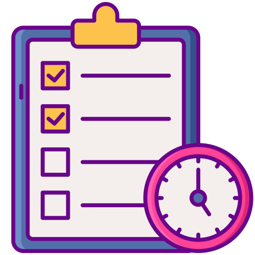
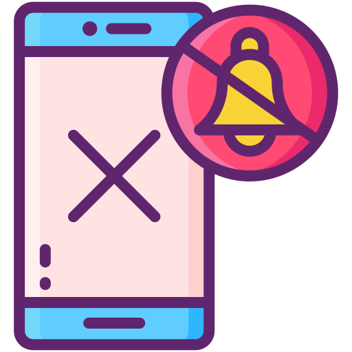

FocusFlow is a productivity timer designed to help you enter deep work, eliminate distractions, and get more done in less time.
Use customizable focus sessions to stay concentrated and avoid burnout.

Organize tasks and track your daily productivity progress.

Stay focused by blocking distracting websites during work sessions.
Analyze your focus habits and improve your workflow.
FocusFlow helped me study for hours without distractions. My productivity doubled.
Join thousands of students and professionals improving their focus every day.